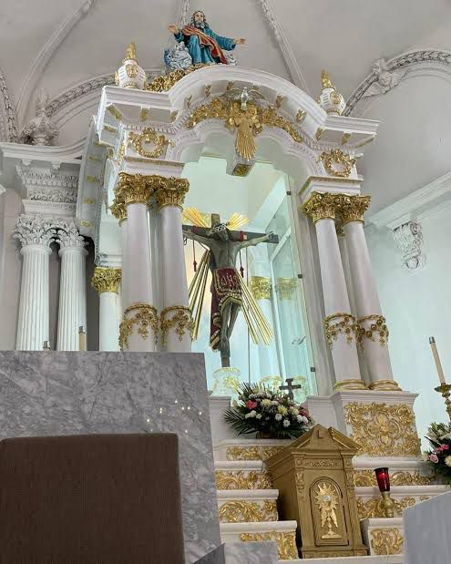

Lugares Recomendados
Explora los paisajes y rincones más emblemáticos de teponahuasco.
- Santuario de nuestro señor de teponahuasco
- La virgen del arbol
- La cruz de las peñitas
Santuario del Señor de Teponahuasco se encuentra en la comunidad de Teponahuasco, perteneciente al municipio de Cuquío, Jalisco. Este templo es el hogar de una venerada imagen de Cristo crucificado, conocida como el Señor de Teponahuasco, que ha sido objeto de profunda devoción desde el siglo XVIII.
